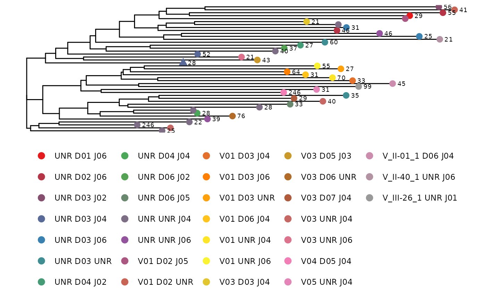
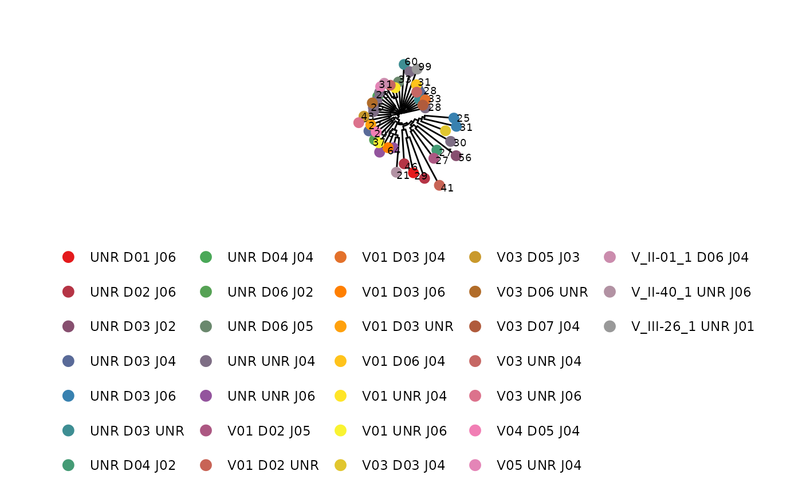
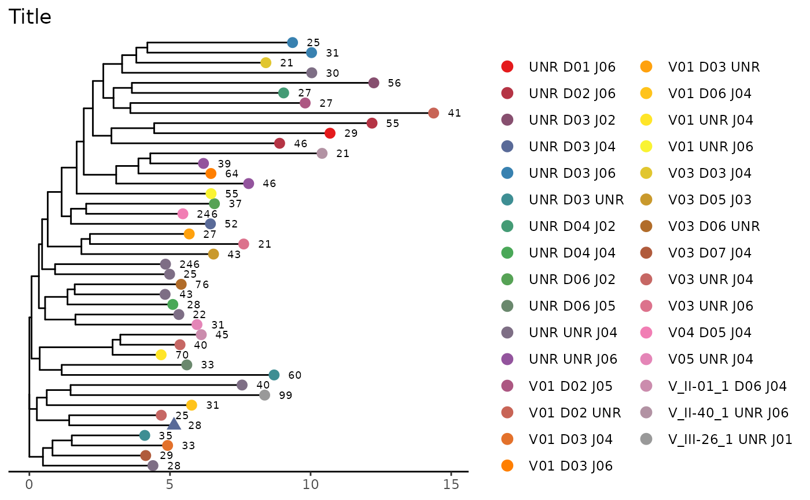
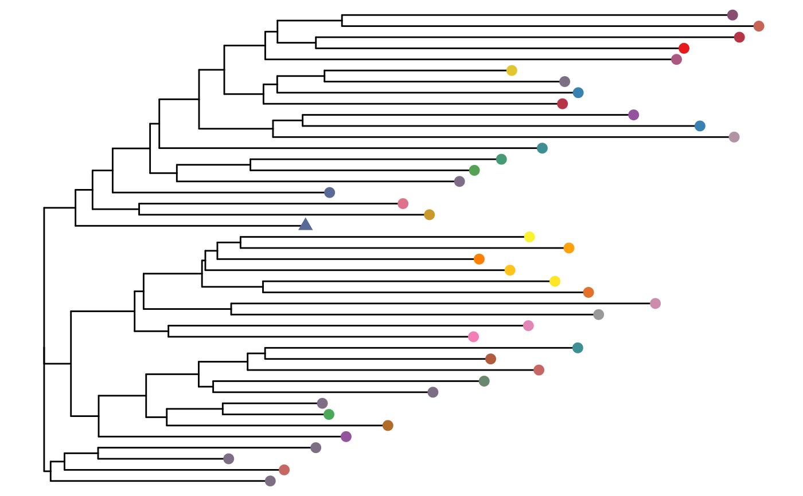

Create a phylogenetic tree using neighbor joining tree estimation for amino acid or junction CDR3 sequences in a list of data frames.
Usage
phyloTree(
study_table,
repertoire_ids,
type = "junction",
layout = "rectangular",
label = TRUE
)Arguments
- study_table
A tibble of unproductive junction sequences or productive junction sequences generated by the LymphoSeq2 function
productiveSeq(). "v_family", "d_family", "j_family", and "duplicate_count" are required columns.- repertoire_ids
A character vector indicating the name of the repertoire_id in the study table.
- type
A character vector indicating whether
"junction_aa"or"junction"(the default) sequences should be compared.- layout
A character vector indicating the tree layout. Options include
"rectangular"(the default),"slanted","fan","circular","radial"and"unrooted".- label
A Boolean value
TRUE(the default): use sequencing duplicate_count to label the treeFALSE: do not show duplicate_count
Value
Returns a phylogenetic tree where each leaf represents a sequence color coded by the V, D, and J gene usage. The number next to each leaf refers to the sequence duplicate_count. A triangle shaped leaf indicates the dominant sequence. Refer to the ggtree Bioconductor package documentation for details on how to manipulate the tree.
Examples
file_path <- system.file("extdata", "IGH_sequencing", package = "LymphoSeq2")
study_table <- LymphoSeq2::readImmunoSeq(path = file_path, threads = 1)
#> Dataset Analysis:
#> Files: 10, Total: 0.00 GB, Largest: 0.0 MB
#> Available memory: 12.0 GB
study_table <- LymphoSeq2::topSeqs(study_table, top = 100)
nucleotide_table <- LymphoSeq2::productiveSeq(
study_table = study_table,
aggregate = "junction"
)
LymphoSeq2::phyloTree(
study_table = nucleotide_table, repertoire_ids = "IGH_MVQ92552A_BL",
type = "junction", layout = "rectangular"
)
#> Warning: `aes_()` was deprecated in ggplot2 3.0.0.
#> ℹ Please use tidy evaluation idioms with `aes()`
#> ℹ The deprecated feature was likely used in the ggtree package.
#> Please report the issue at <https://github.com/YuLab-SMU/ggtree/issues>.
#> Warning: Arguments in `...` must be used.
#> ✖ Problematic arguments:
#> • as.Date = as.Date
#> • yscale_mapping = yscale_mapping
#> • hang = hang
#> ℹ Did you misspell an argument name?
#> Warning: `aes_string()` was deprecated in ggplot2 3.0.0.
#> ℹ Please use tidy evaluation idioms with `aes()`.
#> ℹ See also `vignette("ggplot2-in-packages")` for more information.
#> ℹ The deprecated feature was likely used in the LymphoSeq2 package.
#> Please report the issue at
#> <https://github.com/shashidhar22/LymphoSeq2/issues>.

LymphoSeq2::phyloTree(
study_table = nucleotide_table, repertoire_ids = "IGH_MVQ92552A_BL",
type = "junction_aa", layout = "circular"
)
#> Warning: Arguments in `...` must be used.
#> ✖ Problematic arguments:
#> • as.Date = as.Date
#> • yscale_mapping = yscale_mapping
#> • hang = hang
#> ℹ Did you misspell an argument name?

# Add scale and title to figure
LymphoSeq2::phyloTree(
study_table = nucleotide_table, repertoire_ids = "IGH_MVQ92552A_BL",
type = "junction_aa", layout = "rectangular"
) +
ggtree::theme_tree2() +
ggplot2::theme(
legend.position = "right",
legend.key = ggplot2::element_rect(colour = "white")
) +
ggplot2::ggtitle("Title")
#> Warning: Arguments in `...` must be used.
#> ✖ Problematic arguments:
#> • as.Date = as.Date
#> • yscale_mapping = yscale_mapping
#> • hang = hang
#> ℹ Did you misspell an argument name?

# Hide legend and leaf labels
LymphoSeq2::phyloTree(
study_table = nucleotide_table, repertoire_ids = "IGH_MVQ92552A_BL",
type = "junction", layout = "rectangular", label = FALSE
) +
ggplot2::theme(legend.position = "none")
#> Warning: Arguments in `...` must be used.
#> ✖ Problematic arguments:
#> • as.Date = as.Date
#> • yscale_mapping = yscale_mapping
#> • hang = hang
#> ℹ Did you misspell an argument name?
